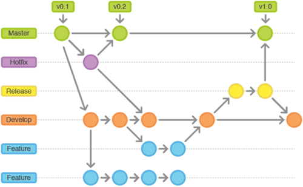
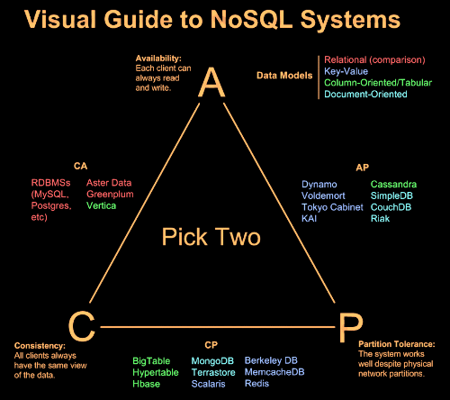
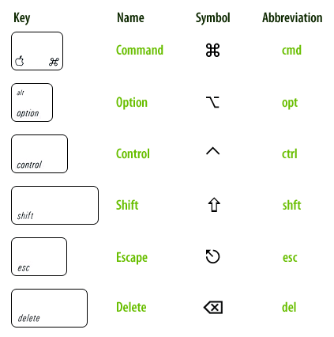
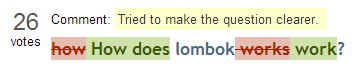

20141223
jaso extends j2ee
Outsider's Dev Story
컴퓨터 vs 책 - B급 프로그래머
ReadTrend
10년은 배우고
10년은 따라 해보고
10년은 창조하고
10년은 가르친다.
-> 40년 동안 배운다.
/images/2009.html
http://www.jaso.co.kr/331
https://www.apple.com/iphone-6/touch-id/
20141222
10월의 어느멋진 날에 Secret Garden(Serenade to Spring) : Korean Lied

20141218
Cretaceous-Tertiary Extinction Event
Permian-Triassic Extinction Event
http://bbs2.ruliweb.daum.net/gaia/do/ruliweb/default/read?articleId=23750741&bbsId=G005&itemId=145
반정규화
Stored Procedure 사용금지
데이터베이스 기능의 사용범위 제한
빈번한 쿼리를 미리 만들어 두어 대응
보조 색인 사용 금지
PK키외 사용 금지
샤딩
http://www.slideshare.net/neuralix/h-base-29701967
20141215
Whip-poor-will chasing Horrid Zale, pencil, 2009
http://seabrookeleckie.com/2009/07/16/whip-poor-wills-in-decline-from-ofo-news
consensus
conscience
ensemble
serenade
choir
interpretation
preposition
Secret Garden- Serenade to Spring
 Serenade To Spring-Secret Garden (guitar cover)
Serenade To Spring-Secret Garden (guitar cover)

20141210
Thomas Bergersen - Final Frontier (Interstellar Trailer 4 Music)

20141209
http://blog.takipi.com/15-tools-to-use-when-deploying-code-to-production/
20141130
좋은 소식 감사합니다.
20141127
20141126
http://blog.outsider.ne.kr/821
their database melts down under load
http://doc.akka.io/docs/akka/snapshot/common/circuitbreaker.html
20141125
http://ktoso.github.io/scala-android-presentation/assets/images/scala_stairs.jpg
http://www.slideshare.net/hypermin/scala-overview-17200157
prevalent
prowl
strand
20141117
https://github.com/sindresorhus/pageres
20141104
$ yum install fonts-korean
$ cd /usr/local/java/jre/lib
$ cp fontconfig.RedHat.properties.src fontconfig.properties
20141030
D3js - enter, exit, update
http://bost.ocks.org/mike/join/
20141029
http://techslides.com/50-javascript-charting-and-graphics-libraries/
20141027
http://www.slideshare.net/carpedm20/django-32473577
http://www.techsuda.com/archives/1674
20141024
http://www.slideshare.net/deview/1a7ansible
https://github.com/knight1128/ansible-simple
20141010

20141007
20141006
20141002
20140928
20140927

20140923
20140915
20140902
ZooKeeper
http://www.slideshare.net/madvirus/zookeeper-34888385
20140821
http://smoothiecharts.org/
20140820
http://zerobrain.tistory.com/
20140818
http://www.dingbatty.com/
20140816
20140814
http://imgur.com/ba55fix
choir! choir! choir! sings Radiohead - No Surprises
 Radiohead No Surprises cover by 'Diversion' Cello Ensemble
Radiohead No Surprises cover by 'Diversion' Cello Ensemble

20140813
http://code.ohloh.net/
오늘 저녁을 먹어야 할듯 집에서.. 전화 왔는데 오늘안먹으면 버려야 하는 누룽지가 있다 함.
20140810
courtesy
20140808
New 2013 DARPA Building Real Life Terminators Military Robots (HD)

20140807
You do better than I did.
It's harder than I thought.
http://blog.dahlia.kr/
20140805
Pacific Rim Main Theme Soundtrack HD - Pacific Rim
 github flow
github flow
20140804
git flow

https://www.atlassian.com/git/workflows#!workflow-gitflow
http://www.slipp.net/wiki/pages/viewpage.action?pageId=4161652
20140722
http://aeternum.egloos.com/1160846
http://springmvc.egloos.com/543686
http://toby.epril.com/?tag=dao
http://netframework.tistory.com/entry/13-queryDSL-Spring-Data-JPA
20140704
개발비의 30%는 프로그램의 요구조건을 확정하는데 사용된다.
개발비의 30%는 프로그램의 요구조건을 변경하는데 사용된다.
개발비의 30%는 프로그램의 버그를 잡는데 사용된다.
개발비의 10%만이 프로그램의 개발에 사용된다.
http://blog.daum.net/devdev/3554353
20140702
우울하다.
20140627
SPOF : Single Point Of Failure
SCP : Consistency, Availability, Partition Tolerance
quorum
ephemeral

20140616
20140612
걱정은 내일의 슬픔을 덜어주는 것이 아니라 오늘의 힘을 앗아간다.
- 코리 덴 붐
Worry does not empty tomorrow of its sorrow, it empties today of its strength.
- Corrie ten Boom
20140609
http://www.slideshare.net/serialxnet/1-35304689
20140605
20140529
 http://tutorials.jenkov.com/java-servlets/servlet-filters.html
http://tutorials.jenkov.com/java-servlets/servlet-filters.html
20140527
마성의 BGM
http://mirror.enha.kr/wiki/%EB%A7%88%EC%84%B1%EC%9D%98%20BGM
20140523
http://www.tomsplanner.com/
"Learing BASIC causes permanent brain damage." - Edsger Dijkstra
20140522
죽음은 태어나기 이전의 나 자신이다. - 아르투어 쇼펜하우어
20140520
20140514
http://www.jqplot.com/
20140513
useServerPrepStmts=true
select * from information_schema.global_status
where variable_name in ('com_stmt_prepare', 'com_stmt_execute', 'prepared_stmt_count')
- Real Mysql p751, p752
http://wikibook.co.kr/blog/tag/real-mysql/
20140512
Divine
Epiphany
Antibiotic
Eyedrop
Conceive
Manifestation
Distress
Stifle
Oxymoron
20140509
http://www.shortcutworld.com/en/win/IntelliJ.html
20140507
http://tomcat.apache.org/whichversion.html
20140503
org.springframework.web.servlet.mvc.annotation.DefaultAnnotationHandlerMapping since 2.5
-> org.springframework.web.servlet.mvc.method.annotation.RequestMappingHandlerMapping since 3.1
org.springframework.web.servlet.mvc.annotation.AnnotationMethodHandlerAdapter since 2.5
-> org.springframework.web.servlet.mvc.method.annotation.RequestMappingHandlerAdapter since 3.1
이전에는 Interceptor의 Handler이 Controller였지만
위 설정은 처리하면 Handler은 org.springframework.web.method.HandlerMethod가 된다.
http://javaiyagi.tistory.com/357
org.springframework.web.accept.ContentNegotiationManagerFactoryBean since 3.2
org.springframework.web.servlet.view.ContentNegotiatingViewResolver since 3.0
https://spring.io/blog/2013/05/11/content-negotiation-using-spring-mvc
20140502
20140430
System of a Down - BYOB(cover)

WHY DO THEY ALWAYS SEND THE POOR!
Barbarisms by Barbaras
With pointed heels.
Victorious, victories kneel.
For brand new spankin' deals.
Marching forward hypocritic
And hypnotic computers.
You depend on our protection,
Yet you feed us lies from the table cloth.
La la la la la la la la la,
Everybody's going to the party have a real good time.
Dancing in the desert blowing up the sunshine.
Kneeling roses disappearing,
Into Moses' dry mouth,
Breaking into Fort Knox,
Stealing our intentions,
Hangars sitting dripped in oil,
Crying FREEDOM!
Handed to obsoletion,
Still you feed us lies from the table cloth.
La la la la la la la la la,
Everybody's going to the party have a real good time.
Dancing in the desert blowing up the sunshine.
Everybody's going to the party have a real good time.
Dancing in the desert blowing up the sunshine.
Blast off, it's party time,
And we don't live in a fascist nation,
Blast off, it's party time,
And where the fuck are you?
Where the fuck are you?
Where the fuck are you?
Why don't presidents fight the war?
Why do they always send the poor?
Why don't presidents fight the war?
Why do they always send the poor? [X4]
Kneeling roses disappearing,
Into Moses' dry mouth,
Breaking into Fort Knox,
Stealing our intentions,
Hangars sitting dripped in oil,
Crying FREEDOM!
Handed to obsoletion,
Still you feed us lies from the tablecloth.
La la la la la la la la la,
Everybody's going to the party have a real good time.
Dancing in the desert blowing up the sunshine.
Everybody's going to the party have a real good time.
Dancing in the desert blowing up the sun
Where the fuck are you!
Where the fuck are you!
Why don't presidents fight the war?
Why do they always send the poor?
Why don't presidents fight the war?
Why do they always send the poor? [X3]
Why, do, they always send the poor [X3]
They only send the poor [x2]
Amazone has such a huge share of the global cloud market
it would appear none of its competitors, including internet behemoth Google, could ever catch up.
The market is young and prone to change.
Google has the name and deep pocket.
Google needs to attack pricing.
Google may be making big capital investments.
Google's future strategy hinges on the cloud.
http://www.javaworld.com/article/2149245/cloud-computing/5-reasons-why-google-can-catch-amazon-in-the-cloud.html#tk.rss_all
20140429
ProjectNaptha
http://projectnaptha.com
http://www.giflike.com/
http://yisangwook.tumblr.com/post/83725422949/tdd-is-dead-long-live-testing
http://yisangwook.tumblr.com/post/74162054759/xkcd-automation
20140428
은희경 특유의 허무주의, 제도에 대한 패배감, 인간성에 대한 회의가 제 몫을 하는 대목이다.
최근의 한 수필에서 작가가 이와같은 태도를 두고 "그처럼 인간의 나약함과 모순을 인정해주는 것이 내 나름의 휴머니즘이다.
그러나 다시 생각해보면 그것은 일방적으로 강요된 도덕에 대한 반발심리가 고전적 가치에 대한 거부감으로 나나탄 것일 수도 있다"고
자해하는 것을 본적이 있다.
- 행복한 사람은 시계를 보지 않는다. p.285
골목에서 한 떼의 술꾼들이 삶은 밤에서 나오는 밤벌레처럼 비틀거리며 기어 나왔다.
- 행복한 사람은 시계를 보지 않는다. p.241
http://en.wikipedia.org/wiki/NP-hard
20140421
the shredding machine.
단순하게 만드는게 능력이다.
20140416
Method Cascading VS Method Chaining VS Fluent Interface
Understanding Event Delegation
정말 아는 것이 아무것도 없구나.
https://learn.jquery.com/events/event-delegation/
http://o2js.com/udemy/presentation#/intro
20140414
backbonejs is 1608 line.
jstack pid.
Backbone.View
http://backbonejs.org/backbone.js
magnifying glass
http://www.100open.com/2011/10/how-diligent-is-your-due-diligence/magnifying-glass/
20140412
http://wallpaperuser.com/wp-content/uploads/2013/01/Milky-Way-star-wallpaper.jpg
http://www.regexr.com/
http://readtrend.com/
20140411
20140409
option + shift + command + T : New Tab with Current Profile
option + shift + command + I : Send Input to Current Session
shift + command + I : Brodcaset Input to All Panes in All Tabs
option + command + I : Brodcaset Input to All Panes in Current Tab
option + command + click : minimized windows without selected window
shift + command + 4 : capture selected area
shift + command + 4, spacebar : capture window

https://medrails.wordpress.com/tag/mac/
20140408
https://medium.com/
http://tridiv.com
social loafing
Can I have this loaf sliced?
그래서 우리는 눈에 띄지 않을 만큼의 태만을 유지하는 데 섬세한 감각을 발달시켜왔다.
개인은 집단이 내린 결정 뒤로 몸을 숨긴다. 이를 학문적으로는 책임감의 분산(Diffusion of responsibility)이라고 부른다.
개인의 능력을 눈에 띄게 만드는 것이다.
- 스마트한 생각들 p96, 97, 99
당신이 소유하고 있는 모든 것을 대자연에게 잠시 빌렸다고 생각하라.
- 스마트한 생각들 p44
20140407
왜 팀원이 늘어날수록 각자 발휘하는 능력은 줄어들까?
- 스마트한 생각들, 뒷표지
회사에서 신청한 고성능(?) 컴퓨터를 기다리는 이 설레는 마음
이 애가 오면 내 인생은 달라질까?
http://www.todayhumor.co.kr/board/view.php?table=bestofbest&no=154849&s_no=154849&kind=search&search_table_name=bestofbest
내가 흘려보내는 침묵도 그에 만만찮게 격앙되어 있었다.
- 행복한 사람은 시계를 보지 않는다. p.30
내가 고독에 익숙해져 있기 때문에 잘 아는데 말이죠.
고독이란 누구와도 나눌 수 없고 나누어서 가벼워지는 것도 아니에요.
그렇게 말해줄 수는 없었다.
- 행복한 사람은 시계를 보지 않는다. p.38
회사든 집이든 내 전화기 주변에는 매일 몇장씩이나 되는 이면지에 낙서가 가득 차곤 했다.
- 행복한 사람은 시계를 보지 않는다. p.41
아버지의 목소리는 소도시에서 연 매출 삼사십억 남짓한 작은 사업체를 굴려 가족의 부양에 평생을 바쳐온 중년 남자답게 조심스러웠다.
- 행복한 사람은 시계를 보지 않는다. p.41
20140406
행복한 사람은 시계를 보지 않는다.
- 은희경
알고 싶어요
- 김희갑 작곡, 양인자 작사
달 밝은 밤에 그대는 누구를 생각하세요
잠이 들면 그대는 무슨 꿈 꾸시나요
깊은 밤에 홀로 깨어 눈물 흘린 적 없나요
때로는 일기장에 내 얘기도 쓰시나요
나를 만나 행복했나요 나의 사랑을 믿나요
그대 생각 하다보면 모든게 궁금해요
하루 중에서 내 생각 얼만큼 많이 하나요
내가 정말 그대의 마음에 드시나요
참새처럼 떠들어도 여전히 귀여운가요
바쁠때 전화해도 내 목소리 반갑나요
내가 많이 어여쁜가요 진정 날 사랑하나요
난 정말 알고 싶어요 얘기를 해주세요
http://mirror.enha.kr/wiki/%EC%95%8C%EA%B3%A0%20%EC%8B%B6%EC%96%B4%EC%9A%94
20140405
씻어야 할 것은 몸이 아니라 영혼이다.
13세기 샤르트르 대성당의 내부에 있는 서양에서 가장 오래된 팰린드롬이다.
이렇게 예술에서 창작의 전부 혹은 일부를 우연에 맡기는 것을
알레아토릭(Aleatorik)이라고 부른다.
- 놀이와 예술 그리고 상상력
20140402
 http://es.dragonball.wikia.com/wiki/Androide_N%C3%BAmero_18
http://es.dragonball.wikia.com/wiki/Androide_N%C3%BAmero_18
20140401
20140331
통계학자인 외할아버지가 컴퓨터를 가지고 있어,
어릴 적부터 컴퓨터를 좋아했으며 집안 분위기 자체가
자기가 좋아하는 걸 하면 적극 밀어주는 스타일이라
성장기의 대부분을 컴퓨터와 지냈다.
그의 어머니 말을 빌리자면 키우기 너무 쉬웠다고 한다.
컴퓨터 한 대와 하루 두 번 파스타만 던져주면 됐다고
http://mirror.enha.kr/wiki/%EB%A6%AC%EB%88%84%EC%8A%A4%20%ED%86%A0%EB%A5%B4%EB%B0%9C%EC%8A%A4
http://www.first8.nl/blog/javaone-day-4/
java 8 stream api
http://technology.amis.nl/2013/10/05/java-8-collection-enhancements-leveraging-lambda-expressions-or-how-java-emulates-sql/
depletion
20140330
premise
Aphorisms
http://wiki.sideeffect.kr
http://okjsp.tistory.com
20140328
akka
C++ 프로그래머들은 연산자 오버로딩하기 위해서 회사에 출근했고,
다음날 연산자를 더 많이 오버로딩하기 위해서 일찍 잠자리에 들었다.
- 폴리글랏 프로그래밍 p84
자바에서 배열은 공변이지만 제네릭에서는 공변이 성립하지 않는다.
- 폴리글랏 프로그래밍 p92
constitutes
succinctly
obscenity
20140327
정말 정말 잘한 것 같다.
여기에다가 무엇을 적고 있다는 것이...
여기에 내가 있었구나.
It seems really, really well done to write here something.
Oh, I was here.
http://techcrunch.com/2012/03/03/pair-programming-considered-harmful/
20140325

20140322
어떻게 해야 할지 모르겠다.
20140315
http://xguru.net
http://sungmooncho.com
20140310
No problem at all, our fluent interface is clean and elegant.
http://wintermuteblog.blogspot.kr/2010/04/fluent-interface-inheritance.html
20140309
http://speckyboy.com/2013/05/01/bootstrap-toolbox
20140305
O(log(n))
while (x > 0) {
x/=2;
}
short and sweet.
https://github.com/seventh7/intellij-mybatis-plugin
Dao <-> Mapper
git version 1.7.9.msysgit.0 에서
https://github.com/JetBrains/intellij-community.git checkout하면
Clone failed: error: cannot spawn git: No such file or directory 발생
git version 1.8.4.msysgit.0로 변경하니깐 됨
20140301
intellij-community project size: 2.33G
git 데이터를 제외하면 613M
java 소스만은 238M(40,934개)
- TreeSize Free
jdk1.6.0_31은 70M(7,212개)
20140228
I hate space.
My First Intellij Plugin
ChromeDriver를 이용한 배포 자동화
클립보드에 URL를 읽어서 Controller 소스코드를 오픈시킴
20140226
oxymoron
20140224
ip가 변경되면 hosts 파일을 기억하자.
테스팅은 끝이없구나.
UI까지 포함한 테스팅은 어떻게 해야 하는걸까?
20140219
ChromeDriver로 모두 자동화해 버릴테다.

20140217
TDD revisited.
TDD는 생각보단 시간을 많이 필요로 한다.
판단을 잘 해야한다.
귀찮음과 성급함을 잘 다스려야 한다.
귀찮아지거나 성급한 마음이 들면 쉬어야 한다.
20140213
20140211
내가 짠 코드지만 왜 이해가 되지 않는 걸까?
why don't I understand my code?
20140210
Groovy, Spock
어디에서 와서 어디로 가는가?
Where did I come from? and where am I going?
20140208
compileonline
http://www.compileonline.com/execute_groovy_online.php
20140207
아키텍트가 알아야 할 12/97가지
http://www.slideshare.net/arload/1297-17670752
http://blog.daum.net/hanjeonman/7977253
20140206
mod_jk 버그
20140205
인간에 대한 깊은 이해와 역사에 대한 통찰
Seegit
http://haacked.com/archive/2012/03/15/visualize-git-with-seegit.aspx/
20140203
20140128
moved to github here.

20140126
Jekyll + Github
http://www.youtube.com/user/acinteractivedesign
20140122
 http://jnb.ociweb.com/jnb/jnbNov2005.html
http://jnb.ociweb.com/jnb/jnbNov2005.html
20140121
http://spinscale.github.io/elasticsearch/2012-03-jugm.html#/7
20140119
TAO
https://www.usenix.org/conference/atc13/technical-sessions/presentation/bronson
Redis: Remote Dictionary Server
Consistent Hashing
http://sarghis.com/blog/726/
20140118
http://helloworld.naver.com/helloworld/551588
20140116
stethoscope
sphygmomanometer
gurney
syringe
blood transfusion
high blood pressure, hypertension
leukemina
20140111
20140110
20140109
20140108
plubming vs porcelain
20140107
Closure
Scope에 제약을 받지 않는 변수들을 포함하고 있는 코드 블록이다.
http://rhio.tistory.com/208
20140106
20140105
Human beings are a disease. a cancer of this planet. and we are the cure.
20140104
prototype based VS class based is dynamic VS static.
http://stackoverflow.com/questions/816071/prototype-based-vs-class-based-inheritance
Prototype Object
Prototype Link
http://insanehong.kr/post/javascript-prototype/
do less code
관리자는 관리를 덜 하는 사람이고
디자이너는 다자인을 덜 하는 사람이고
코더는 코딩을 덜 하는 사람이다.
Manager, do less manage.
Designer, do less design.
Coder, do less code.
20140102
Method chaining + Inheritance
public abstract class Pet &lt;T extends Pet&lt;T&gt;&gt; {
private String name;
private T getThis() {
return (T) this;
}
public String getName() {
return this.name;
}
public T setName(String name) {
this.name = name;
return this.getThis();
}
}
http://stackoverflow.com/questions/1069528/method-chaining-inheritance-dont-play-well-together-java
20140101
SOLID
SRP - Single Responsibility Principle
OCP - Open-Closed Principle
LSP - The Liskov Substitution Principle
ISP - Interface Segregation Principle
DIP - Dependency Inversion Principle